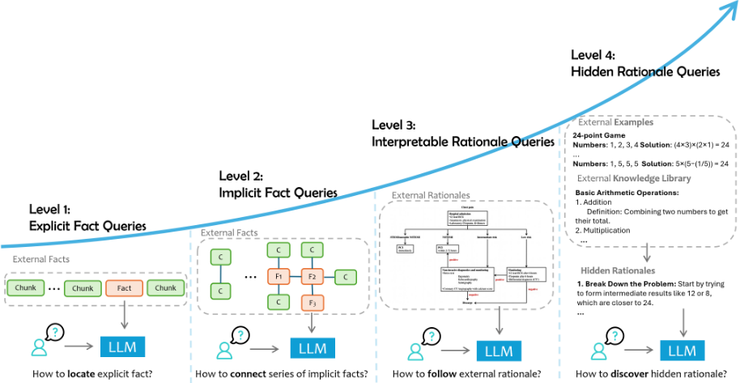
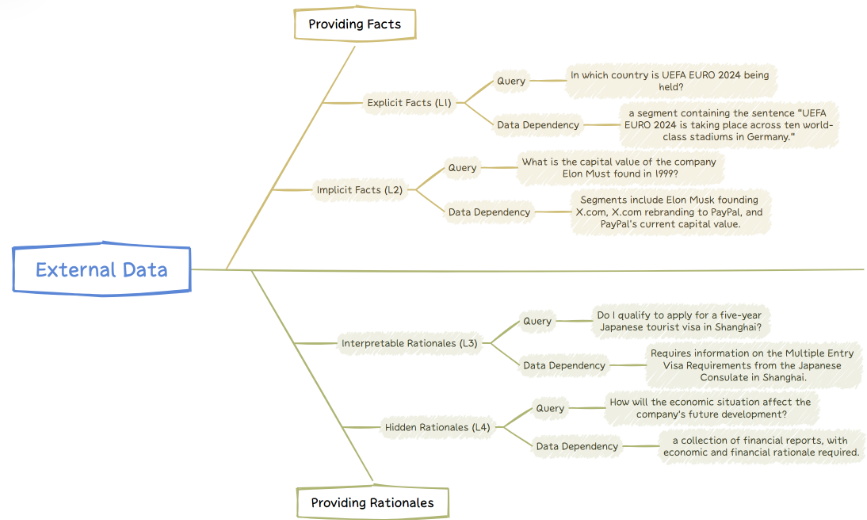
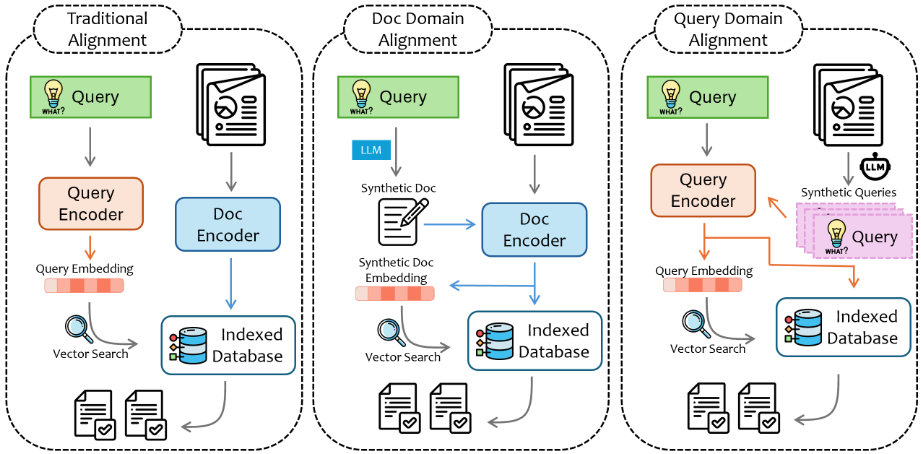
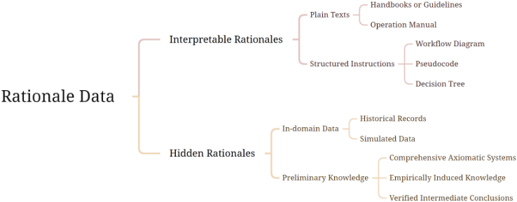
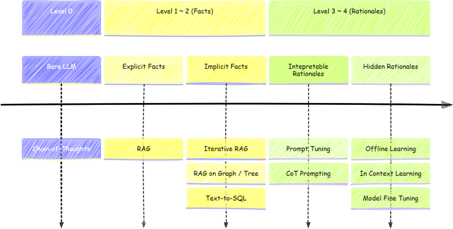
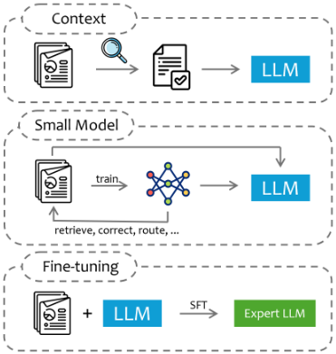

检索增强生成（RAG）及更多：如何让 LLM 更明智地使用外部数据的综合综述
该综述针对数据增强 LLM 应用在专业领域落地时效果不达预期的问题，指出根因常是未正确识别任务核心焦点或未拆解多能力组合，并提出将用户查询按所需外部数据类型与任务焦点分为四级：explicit fact、implicit fact、interpretable rationale、hidden rationale queries。论文逐级梳理挑战与对应技术：显式事实层以基础 RAG 为主（多模态文档解析、chunking、索引、query-document 对齐、重排序等增强），隐式事实层采用 iterative RAG、图/树问答与 NL2SQL，可解释理由层依赖 prompt tuning 与 CoT prompting，隐藏理由层则需 offline learning、ICL 与 fine-tuning。最后比较 context、small model、fine-tuning 三种知识注入方式在数据量、训练时长与算力上的递增成本及各自优劣。核心结论是数据增强应用没有 one-size-fits-all 方案，开发者应先判定任务层级再选型，实际系统通常需要组合多种方法的 routing pipeline。
数据增强 LLM 应用（基于 RAG、fine-tuning 等技术）在法律、医疗、金融等专业领域部署时效果常不达预期，开发者需投入大量人力；论文认为根因在于未正确识别任务的核心焦点，或任务本身需要多种能力的组合而未被拆解，目标是帮助读者系统理解与分解 LLM 应用中的数据需求与关键瓶颈，并针对不同挑战给出解决方案。
提出四级查询分类体系并形式化定义数据依赖（Dep(q)）；逐级总结挑战与最有效技术：explicit fact 层以 RAG 为主，含多模态文档解析、chunking 优化、sparse/dense/hybrid 索引、query-document 对齐（HyDE、query rewriting、SlimPLM 等）、重排序与递归/迭代检索；implicit fact 层用 iterative RAG、图/树问答（Think-on-Graph、KnowledgeNavigator 等）与 NL2SQL；interpretable rationale 层用 prompt tuning（TEMPERA、Rlprompt、OPRO、GrIPS、Reflexion 等）与 CoT prompting（含以 LLM 为中心的 agent workflow）；hidden rationale 层用 offline learning（STaR、GL、LEAP、RICP、MedPrompt、Buffer-of-Thought 等）、ICL 与 fine-tuning（Adapter、Prefix Tuning、LoRA 等）；最后归纳 context、small model、fine-tuning 三种外部数据注入形式的适用场景与权衡。
未在论文中说明
与已有综述常只聚焦单一层级或单一技术主题不同，本文提出统一的四级查询分类框架，覆盖从直接事实检索到隐式领域理由的完整谱系，为每级匹配独特挑战与最有效技术，并系统比较三种外部数据注入方式（context、small model、fine-tuning）的强弱与适用问题类型，定位为构建数据增强 LLM 应用的鸟瞰图与开发手册。
相关度级别：high
命中能力域：3.1 上下文工程与记忆 | 3.2 提示工程 | 3.3 Agent 架构与工具使用 | 3.5 评测与可靠使用
理由：论文核心正是团队关注的'如何把模型用好'：RAG 与检索增强、上下文组织与窗口限制、prompt tuning/CoT/ICL 等提示技术、以 LLM 为中心的 agent workflow 与 NL2SQL 等工具调用，以及幻觉抑制与可靠性提升，直接命中 3.1/3.2/3.3/3.5 四个能力域；四级查询分类为团队的知识库问答、代码/文档/测试辅助等场景提供了任务分层与选型的决策框架，与团队'不训练模型、专注用好模型'的定位高度吻合。
建议动作：深入精读并做内部分享
arXiv:2409.14924v1 [cs.CL] 2024年9月23日
检索增强生成（RAG）及其后续发展：关于如何让大语言模型（LLMs）更明智地使用外部数据的全面综述
Siyun Zhao, Yuqing Yang, Zilong Wang, Zhiyuan He, Luna K. Qiu, Lili Qiu
微软亚洲研究院
{siyunzhao,yuqing.yang,wangzilong,zhiyuan.he,lunaqiu,liliqiu}@microsoft.com
借助外部数据增强的大语言模型（LLMs）在完成现实世界任务方面已展现出卓越的能力。外部数据不仅强化了模型的领域专业知识和时效相关性，还减少了幻觉的发生，从而提升了输出的可控性与可解释性。将外部数据融入大语言模型的技术，例如检索增强生成（Retrieval-Augmented Generation, RAG）和微调，正受到越来越多的关注并获得广泛应用。尽管如此，在各类专业领域中有效部署数据增强的大语言模型仍面临巨大挑战。这些挑战涵盖范围广泛的问题：从检索相关数据、准确解读用户意图，到在复杂任务中充分发挥大语言模型的推理能力。我们认为，对于数据增强的大语言模型应用而言，并不存在一刀切的通用解决方案。在实践中，性能不佳往往源于未能正确识别任务的核心关注点，或者是因为任务本身需要融合多种能力，而必须将这些能力解耦开来才能得到更好的解决。在本综述中，我们提出了一种 RAG 任务分类方法，依据所需外部数据的类型和任务的主要关注点，将用户查询划分为四个层级：显式事实查询、隐式事实查询、可解释推理查询和隐藏推理查询。我们定义了这些层级的查询，提供了相关数据集，并总结了其中的关键挑战以及应对这些挑战的最有效技术。最后，我们讨论了将外部数据融入大语言模型的三种主要形式：上下文、小模型和微调，并重点阐述它们各自的优势、局限性以及适合解决的问题类型。本工作旨在帮助读者深入理解并分解构建大语言模型应用过程中的数据需求与关键瓶颈，为不同的挑战提供解决方案，并作为系统性开发此类应用的指南。
大语言模型（Large Language Models, LLMs）已展现出卓越的能力，包括广博的世界知识和复杂的推理技能。尽管取得了这些进展，在各类专业领域中有效部署它们仍面临重大挑战。这些挑战包括模型幻觉、与领域特定知识不匹配等问题。融入领域特定数据，尤其是那些无法纳入其初始训练语料的私有数据或本地部署（on-premise）数据，对于定制大语言模型应用以满足特定行业需求至关重要。通过检索增强生成（Retrieval-Augmented Generation, RAG）和微调等技术，数据增强的大语言模型应用在多个方面已展现出优于仅基于通用大语言模型构建的应用的优势：
尽管人们对这些进展充满热情，开发者们却常常举步维艰，不得不投入大量人力才能达到预期效果（例如，在问答中实现较高的成功率）。大量研究 [1, 2, 3, 4, 5] 强调了基于 RAG 和微调等技术构建数据增强的大语言模型应用所面临的挑战与挫折，尤其是在法律、医疗健康、制造等专业领域。
这些挑战涵盖范围广泛，从构建数据管道（例如数据处理与索引）到利用大语言模型的能力实现复杂的智能推理。例如，在金融应用中，经常需要理解并利用高维时间序列数据；而在医疗健康领域，医学影像或时间序列形式的医疗记录往往不可或缺。使大语言模型能够理解这些不同形式的数据是一个反复出现的挑战。另一方面，在法律和数学应用中，大语言模型通常难以把握不同结构之间的长距离依赖关系。此外，根据具体的应用领域，对大语言模型响应的可解释性和一致性提出了更高的要求。大语言模型的固有特性往往表现为低可解释性和高不确定性，这带来了重大挑战。提升大语言模型的透明度并降低其不确定性，对于增强其输出的可信度和可靠性至关重要，尤其是在精度和问责性至关重要的领域。
通过与领域专家和开发者的深入交流，并仔细分析他们所面临的挑战，我们深刻认识到：数据增强的大语言模型（LLM）应用并非一种放之四海而皆准的解决方案。现实世界的需求，尤其是专家领域中的需求，高度复杂，其在与给定数据的关系以及所需推理难度方面可能存在显著差异。然而，开发者往往没有意识到这些区别，最终得到的解决方案充满性能陷阱（好比一座四处漏水的房子）。相反，如果我们能够充分理解不同层级的需求及其独特的挑战，就可以据此构建应用，并使应用稳步改进（就像一步一步建造一座坚固可靠的房子）。
然而，相关研究工作与现有的综述 [6, 7, 8, 9, 10, 11, 12, 13] 往往只聚焦于其中某一个层级或某一特定的技术主题。这促使我们编写了这篇全面的综述，其目标是清晰地定义这些不同层级的查询，识别与每一层级相关联的独特挑战（图 1），并列举解决这些挑战的相关工作与努力。本综述旨在帮助读者构建对数据增强的 LLM 应用的鸟瞰式全局视角，同时也可作为如何系统性地开发此类应用的手册。
数据增强的 LLM 应用可以有多种形式，从常见的基于特定领域数据的问答机器人，到复杂数据流水线中的语义处理算子，甚至是多智能体（multi-agent）系统中负责处理特定步骤的 Agent。然而，总体而言，一个数据增强的 LLM 应用可以形式化表述如下：
其中，Q、A 和 D 分别表示用户的输入（Query）、期望的响应（Answer）以及给定的数据。应用 f 的任务是基于 D 建立从 Q 到 A 的映射。
与仅依赖既有知识的独立 LLM 系统不同，数据增强的 LLM 应用的特点在于依赖外部数据（D）来准确解答所提出的查询（Q）。引入外部数据 D 能够显著增强 LLM 的能力，使其能够获取最新的、特定领域的知识，并理解专家的推理依据。根据查询利用外部数据的程度和方式，可以将查询划分为不同的复杂度层级，这反映出查询所需参与的深度与性质。
在数据增强的 LLM 应用领域中，可以依据查询的复杂程度及其所需数据交互的深度对查询进行分层。这种分层有助于理解 LLM 为生成准确且切题的回答所必须执行的不同层次的认知处理。从简单直接的事实检索到对隐含知识的细致解读，每一层级都代表着 LLM 所要处理的任务在复杂精细程度上的一次跃升。下文将对这些层级加以界定，并剖析每个阶段所必然涉及的独特挑战与所需能力。
2

1 https://www.fda.gov/industry/fda-basics-industry/guidances
3

……的成功流程。同样，在软件开发中，以往 bug 的调试历史能够提供丰富的隐含洞见。尽管每项调试决策的逐步推理依据可能并未被系统地记录下来，但 LLM 必须能够提取出引导这些决策的底层原则。通过综合这些隐藏的推理依据，LLM 所生成的回答不仅准确，还能体现出经验丰富的专业人士历经长期磨砺而形成的难以言传的专业知识与问题解决方法。
总而言之，将查询划分为不同层级反映了复杂度的梯度以及 LLM 所需具备的理解类型。如图 1 所示并以图 2 为例，前两个层级——显式事实（Explicit Facts）和隐式事实（Implicit Facts）——侧重于事实信息的检索，无论这些信息是直接陈述的，还是需要基本推理才能得出的。这些层级考验的是 LLM 将数据提取并综合为连贯事实的能力。相反，后两个层级——可解释推理依据（Interpretable Rationales）和隐藏推理依据（Hidden Rationales）——则将重点转向 LLM 学习并运用数据背后推理依据的能力。这两个层级要求更深层次的认知投入：前者要求 LLM 与专家思维保持一致，后者则要求 LLM 从非结构化的历史数据中提炼智慧。依据该标准对常见事实型查询数据集的分类如表 1 所示。
每个层级都带来其独特的一系列挑战，因而需要量身定制的解决方案才能有效应对。在后续章节深入剖析这些层级的复杂细节时，我们将探讨使 LLM 能够在这些多样化的查询类型谱系中驾驭数据增强应用复杂性的具体策略与方法。这一探讨不仅将凸显 LLM 当前的能力，还将揭示该领域正在取得的进展以及潜在的未来发展方向。
显式事实查询（explicit fact queries）是最直接的一类数据增强查询。这一层级的查询可以通过直接访问集合中的特定领域文档或文档片段来回答。这些问题的答案通常以纯文本形式存在于文档中，在生成回答时仅需极少的推理或简单的依据。
这一层级的定义性特征是对特定外部数据片段清晰而直接的依赖。
4
| Task Categorization | Datasets | levels | Mutiple References |
|---|---|---|---|
| QA | NQ(Natural Questions)[15] MS MARCO [16] TriviaQA[17] SQuAD [18] ASQA [19] WebQSP [20] HotPotQA[21] 2WikiMultiHopQA[22] MuSiQue[23] Bamboogle[24] | 1 - Explicit Facts 1 - Explicit Facts 1 - Explicit Facts 1 - Explicit Facts 1 - Explicit Facts 1 - Explicit Facts 2 - Implicit Facts 2 - Implicit Facts 2 - Implicit Facts 2 - Implicit Facts 2 - Implicit Facts 2 - Implicit Facts 2 - Implicit Facts | False False False False False False True True True True True True True True |
| QA | StrategyQA[25] | ||
| QA | ComplexWebQuestions [26] | ||
| QA | WebQuestions [27] | ||
| QA | Mintaka [28] | 2 - Implicit Facts | |
| QA | MetaQA [29] | 2 - Implicit Facts | True |
| QA | qasper [30] | 2 - Implicit Facts | True |
| QA | DROP [31] | 2 - Implicit Facts | True |
| Multi-Choice | QuALITY [32] | 2 - Implicit Facts | True |
| Fact Checking | Feverous[33] | 2 - Implicit Facts | True |
| Task Categorization | Datasets | levels | Mutiple References |
数据集 D 可以以多种方式进行分割，形成文档或片段，记作 D 1 , D 2 , . . . , D n ：
每个片段 D i 都被认为是相对较短的，其包含的内容更加聚焦且具体 2 。
对于给定的查询 q ∈ Q ，并非 D 中的每个片段都是构建回答所必需的。设 δ : Q×D→{ 0 , 1 } 表示数据片段 d ∈ D 对于特定查询 q 的必要性，其中 δ ( q, d ) = 1 表示回答查询 q 需要数据片段 d ，否则 δ ( q, d ) = 0 。查询 q 的数据依赖（data dependency）由解决查询 q 所不可或缺的片段子集来刻画，其定义为：
容易理解，Dep ( q ) ∈ P ( D ) ，其中 P ( D ) 是 D 的幂集 3 。
显式事实查询（explicit fact queries），记作 Q 1，其特征在于答案可以直接从数据集 D 中的特定数据片段检索得到。在数据增强的 LLM 系统的语境下，这类查询可形式化定义如下：
对于任意查询 q 及其对应的答案 a，显式事实查询是指存在如下条件的查询：
2 在一些最新的进展中，片段的大小可能大到一整个文档，甚至更大
3 集合 S 的幂集（power set，或称 powerset）是由 S 的所有子集构成的集合，包括空集和 S 本身。
5
这一定义强调了显式事实查询依赖于直接的数据检索，而无需在所识别数据片段的范围之外进行复杂的推理或推断。
这一层级的查询主要要求正确地检索数据，以便大语言模型（LLMs）提供准确的回答。检索增强生成（RAG）[6] 因其有效性、灵活性以及相对较低的成本，成为处理这一层级查询时最常采用的技术方案。然而，即使采用了 RAG，构建一个健壮且高质量的系统仍然面临重大挑战。这些挑战包括：
鉴于 RAG 的广泛流行，已有大量文献和工具被开发出来以应对这些挑战。在本节的剩余部分，我们将重点介绍一些最实用、最具影响力的 RAG 增强方法。此外，我们还将讨论在 RAG 之外可以采用的其他替代技术方案。
检索增强生成（RAG）是指一种方法学，即语言模型在生成过程中通过动态检索外部信息来增强其自然语言生成能力。该技术将大语言模型（LLM）的生成能力与来自海量数据库或文档的信息检索相融合。这一过程通常实现为数据索引构建、检索系统构建和答案生成。
这一层级的文档解析通常需要以连贯一致的方式从文本、表格和插图中提取信息，确保相关片段能够被准确识别和检索。
多模态文档解析 如何处理源文档中的多模态内容，例如图表、表格甚至视频（如会议录像），是最常被问到的问题之一。总体而言，解决这一问题通常采用两种方法。第一种方法是将多模态内容转换为文本形式。例如，Table-to-Text 方法 [34] 将表格转换为文本，而其他技术则将视觉内容转换为文本描述或基于属性的描述 [35, 36]，随后再由大语言模型进行处理。第二种方法则利用多模态嵌入（embedding）技术 [37, 38, 39]，将从多模态数据中检索到的嵌入作为输入的软提示（soft prompt）。
分块优化 对于长文本而言，将文档切分为文本块（chunk）是一种常见且必要的操作。较大的文本块能够更好地保留上下文的语义连贯性，但每个块内也往往包含更多噪声 [40]。常用的分块策略 [41, 42] 包括固定大小分块、递归分块、滑动窗口分块、基于段落的分块、语义分块等。某些方法旨在确定查询所需的细节程度，并据此选择适当粒度的文本块进行检索 [43, 44]。另一些方法则选择将文本处理并细化为信息完整度较高的较小片段 [45]。此外，还有方法采用视觉模型按照原始文档结构对文本进行切分 [46]。
6
信息检索（IR）技术可以平滑地迁移到 RAG 应用中。其中涉及的主要步骤包括建立数据索引、处理查询、检索与匹配、重排序以及评估。
索引：此步骤的目的是建立从搜索词到文本片段的映射，确定检索系统运行的逻辑。索引方法大致分为三类：稀疏检索、稠密检索和混合检索。稀疏检索使用特定词语对文本片段进行索引。相比之下，稠密检索将文本片段映射到稠密的特征向量空间中。混合检索则结合了稀疏技术与稠密技术的要素。
查询-文档对齐：此步骤的目标是将查询与外部数据中的文档片段进行对齐，以找出最能辅助回答查询的最佳文档片段。如图 3 所示，这种对齐主要有三种方法：传统对齐、文档域对齐和查询域对齐。传统对齐是将文档片段和查询都映射到同一编码空间中。例如，许多基于双编码器的稠密检索架构都配备了专门的查询编码器 [56, 57, 59]。反之，如果像 RAG 这样的系统采用稀疏检索，则需要从查询中提取关键词用于搜索。进一步的优化可以通过查询重写技术实现，该技术通过缓解用户术语不准确或描述模糊等问题来提高搜索准确性，从而有效提升搜索结果的精确度 [74]。文档域对齐是先生成合成答案，再利用这些答案来召回相关数据，从而有效解决查询与被检索数据不在同一分布空间的问题。该领域的一项代表性工作是 HyDE [75]。查询域对齐 [76] 则是为每个原子文本单元生成一组合成问题，将文本片段映射到查询空间中，然后检索与原始查询最接近的合成问题及其对应的文本片段。这种方法确保为响应查询而选择最相关且在上下文上最合适的片段。SlimPLM [77] 采用一个小型代理模型来生成启发式答案，随后利用这些答案预测回答问题所需的知识。这种方法同样为将查询对齐到文档空间提供了一种有效手段。
重排序与纠错 在检索出前 k 个文本块后，RAG 系统必须对这些片段进行过滤和重新排序。大多数 RAG 系统使用检索器提供的相关性分数作为排序依据，而一些研究则采用困惑度（perplexity）或困惑度增益等特定指标作为排序标准 [78, 79]。另一些工作则利用 LLM 评估检索到的文本块的可信度与实用性，训练一个可插拔的、由奖励驱动的上下文适配器来优化检索器的输出 [80]。此外，还有一些研究专注于预训练一个专用于事实验证的小型语言模型，用于过滤掉检索到的错误文本块，从而提升召回文本的质量 [81]。
7

递归检索或迭代检索 考虑到单次检索在准确性方面存在固有局限，一种有效的缓解策略是执行多次检索，以逐步弥补可能存在的遗漏。Kim 等人（2023）提出了一种树状递归检索方法，结合剪枝策略，将模糊的问题逐步分解为消歧后的问题，最终得到最接近的正确答案 [82]。类似地，SEATER 使用 k-means 算法构建待检索条目的层次树结构，并在该树结构中迭代地召回节点 [83]。
生成响应需要判断检索到的信息是否已经充分，或者是否还需要额外的外部数据。处理检索到的知识与模型内部先验知识之间的冲突同样至关重要 [84, 85, 86]。监督微调（supervised fine-tuning）是提升 RAG 系统生成性能的一种有效方法。当检索到的上下文中包含无关或错误信息时，预训练大语言模型往往容易被误导，从而产生错误的响应。许多研究表明，通过巧妙地设计面向 RAG 系统的训练数据，微调或预训练可以有效缓解这一问题 [87, 88, 89]。RAAT [89] 通过实验分析证明，无关检索噪声、相关检索噪声和反事实检索噪声对 RAG 模型的有害影响是逐步递增的。通过将这些因素融入训练过程，这些方法使 LLM 能够在内部识别含噪上下文，从而即使在存在含噪检索的情况下，也能显著提升响应生成质量。此外，为了确保 RAG 系统中检索器与生成器之间的性能更加一致，一些研究在训练阶段对检索器和生成器进行联合训练 [90, 91, 92]。
这些查询涉及并非一目了然的数据依赖关系，可能需要一定程度的常识推理或基本的逻辑推导。所需信息可能分散在多个片段中，或者需要进行简单的推理。（示例见图 2）
这一层次的查询需要从集合中的多个文档里收集并处理信息。所需信息的收集可能超出单次检索请求的能力，因而需要将原始查询分解为多个检索操作，并将结果聚合为一个综合性的答案。这一层次通常涉及常识推理，无需领域专业知识。这类查询可能包括统计查询、描述性分析查询和基本聚合查询。例如，计数、比较、趋势分析和选择性摘要等操作常见于“有多少”和“什么最多”类型的查询中，而多跳推理（multi-hop reasoning）则被频繁使用。因此，我们可以将第 2 层查询 Q 2 定义如下：
8
对于任意查询 q 及其对应的答案 a，Q 2 事实查询是指满足以下条件的查询：
其中 r D ( q i ) 标识出 D 中为回答 q i 所需的相关数据片段，这些片段的并集提供了回答 q 所需的信息。
该定义强调了 Q 2 查询依赖于将复杂查询分解为一组更简单、显式的事实查询 Q 1 的能力，随后可将这些查询的答案组合起来，以生成对原始查询 Q 2 的正确响应。
在这一层级，查询仍然围绕事实性问题展开，但答案并未显式地出现在任何单个文本段落中。相反，这类查询需要通过常识推理将多个事实组合起来，才能得出结论。二级查询的挑战主要包括：
用于应对这一层级挑战的方法包括迭代式 RAG、基于图/树的 RAG 以及结合 SQL 的 RAG 等。
隐式事实查询类似于多跳 RAG 任务。这类方法动态地控制多步 RAG 过程，通过迭代方式收集或修正信息，直至获得正确答案。
9
使 LLM 能够在两个阶段之间交替进行，直至得出最终答案：（1）生成一个更简单的单步问题并给出直接答案；（2）将该问答对回溯到检索到的文档中，以验证并纠正预测中的任何不准确之处。这一迭代过程确保了响应更加可靠和准确。
处理隐式事实查询需要综合来自多个参考文献的信息。图或树，无论是基于知识的还是数据结构型的，都能自然地表达文本之间的关系结构，因此非常适合此类数据检索问题。
[98] 为大语言模型（LLM）与知识图谱（KG）提出了一条具有前瞻性的发展路线图，包括：1）KG 增强的 LLM，即在 LLM 的预训练和推理阶段融入 KG，以加深模型对已获取知识的理解；2）LLM 增强的 KG，即利用 LLM 完成嵌入、补全、构建、图到文本生成和问答等各类 KG 任务；3）LLM+KG 协同方法，即 LLM 与 KG 各自发挥互补作用，通过由数据和知识驱动的双向推理相互增强。Rigel-KQGA 模型 [99] 是一种端到端的知识图谱问答（KGQA）模型，它基于查询预测所需的知识图谱节点，并结合 LLM 得出答案。Think-on-Graph [100] 和 KnowledgeNavigator [101] 等工作提取查询所涉及的实体，然后在图上执行迭代的广度优先搜索（BFS），将 LLM 用作思考机器来确定最优探索路径并进行剪枝。R³ [102] 则通过 LLM 引入若干可能解决查询的常识公理，依次搜索相关的知识子图，以评估当前信息是否足以回答该查询，并持续这一过程直至问题得到解决。
在处理结构化数据时，将自然语言查询转换为 SQL（NL2SQL）可以是一种有效的方法。像 Chat2DB 这样的工具通过将用户查询翻译为数据库查询来简化这一过程。在大语言模型（LLM）时代，text-to-SQL 领域已取得显著进展[105, 106, 107, 108]，这使我们能够利用这些工具从结构化数据库中检索信息。这一能力可作为宝贵的外部数据源，用于增强 LLM 的生成能力。通过集成 text-to-SQL 工具 [109]，LLM 能够访问并整合结构化数据，从而提升其生成更准确、更贴合上下文的回答的能力。这种集成不仅提高了生成内容的深度和质量，还扩展了 LLM 应用的范围，使其能够执行需要与数据库内容进行交互并加以解读的更复杂任务。
10
是否使用微调。一些工作 [110] 已经证明，LLM 在微调过程中难以获取新的事实性知识。这一过程可能导致 LLM 在生成准确回答方面的整体性能下降，并且往往会产生更多幻觉。此外，研究 [111] 表明，使用新的事实数据对 LLM 进行微调可能会使模型机械地记忆事实陈述。有趣的是，改变这些被记忆事实的措辞会使最近学到的知识失效，这表明 LLM 的理解与记忆仅停留在较浅的层面。这指出了当前微调流程的局限性，也表明需要更精细的方法来有效整合和适配新信息。
是否区分不同层级的事实查询。显式事实查询与隐式事实查询都是基于事实的，在构建数据增强的 LLM 应用之前，确定这些查询属于哪个层级至关重要。将显式事实查询误分类为隐式事实查询，可能导致检索到大量看似相关但最终对回答问题没有帮助的表层信息，这会误导 LLM 并浪费计算资源。相反，将隐式事实查询误认为显式事实查询，则会妨碍使用恰当的方法来检索充分且全面的外部辅助数据。隐式事实查询通常需要动态整合与查询上下文相关的特定信息，而显式事实查询通常只需要单个数据片段，因此只需检索固定数量的外部数据。这可能导致 LLM 的性能欠佳。因此，基于对目标任务的透彻理解来预先区分查询的层级是有益的。此外，已有大量工作致力于训练模型自主评估检索到的信息是否充分，self-RAG [92] 等方法便是典型示例。
在本节及下一节中，我们将探讨那些需要外部数据来为其求解提供推理依据（rationale）的查询。这类查询不仅要求掌握事实性内容，还要求具备理解并运用领域特定推理依据的能力，而这些推理依据与数据所处的上下文密不可分。我们根据所涉及推理依据的性质，将这些查询分为两类：基于可解释推理依据的查询和基于隐藏推理依据的查询，如图 4 所示。
在依赖外部数据提供推理依据的应用中，可解释推理依据查询是相对简单直接的一类。这类查询的辅助数据通常包含对解决问题所用思维过程的清晰解释。这些数据可以以多种形式组织：
4 https://en.wikipedia.org/wiki/Moore_machine
5 https://en.wikipedia.org/wiki/Mealy_machine
11

在可解释推理依据查询领域，另一个挑战是以易于理解的方式将特定领域的推理依据整合到 LLM 中。主要挑战如下：
对于可解释推理依据查询，关键问题在于如何将外部数据提供的推理依据有效整合到 LLM 中，并确保这些模型能够准确遵循这些推理依据并据此作出反应。Text2MDT [112] 提供了一个可行的示范，提出了两种从医学指南和教科书中自动提取医学决策树的方法。这一过程厘清了冗长医学文本中的逻辑链条，使其更易于理解。类似地，MedDM [113] 开发了一种可由 LLM 执行的临床指导树（clinical guidance tree, CGT）格式，提出了在这些可执行 CGT 上进行推理的方法学，以及患者与 LLM 之间多轮对话的框架。InstructRec [114] 旨在利用 LLM 在推荐系统中的能力，设计了一种通用格式，以自然语言描述用户的偏好、意图、任务形式和上下文，从而构建出一个高性能的、基于语言的推荐系统。
将推理依据直接作为自然语言指令整合到 LLM 中并不一定能带来最优性能，而手动设计提示可能十分耗时。为解决这一问题，采用提示调优（prompt tuning）技术对于增强 LLM 遵循特定推理依据的能力变得至关重要。一种有效的方法是应用强化学习，TEMPERA 框架 [115] 便是例证，该框架在强化学习的动作空间内设计包含有限指令、示例和 verbalizer 的提示。在这里，LLM 生成正确响应的概率被用作奖励，引导模型在各数据集上发现最优的提示配置。类似地，Rlprompt [116] 采用强化学习方法，训练一个适配器（adaptor），基于关于 LLM 响应相对准确率的反馈来辅助较小的语言模型生成最优提示。另一种创新策略是方向性刺激提示（Directional Stimulus Prompting），它将 LLM 在下游任务上的表现用作奖励机制。该方法训练模型提取并利用方向性刺激——即针对具体实例定制的特定线索或关键词——作为提示，从而确保 LLM 的行为与预期结果更加一致。
12
此外，对于离散提示空间内的优化，则采用基于编辑的方法，例如 GrIPS [117]。该技术使用一个小型数据集作为评分集，对各种提示修改方式进行试验——包括删除、交换、改写和添加——从而快速有效地确定最有效的提示配置。
最近的研究进展 [118, 119] 也见证了利用 LLM 自身来促进提示优化的兴起。OPRO [120] 利用 LLM 一方面基于历史数据及其相关性能指标生成新的提示方案，另一方面对这些提示进行评分，从而简化了优化流程。此外，Reflexion 框架 [121] 提出了一种基于语言反馈的新型提示优化方法，利用语言模型对 LLM 的输出进行分析，并将反思内容存储在情景记忆缓冲区中。该记忆组件有助于在未来的交互中完善决策过程并评估结果，从而充分利用积累的历史洞察。
处理复杂的推理依据要求 LLM 展开更长的推理链，这一过程有别于事实型查询中典型的、跨不同事实信息所进行的推理。然而，思维链（Chain-of-Thoughts, CoT）[122]、Tree-of-Thoughts [123] 或 Graph-of-Thoughts [124] 等方法已被证明对此类场景行之有效。对于已被充分研究且具有高度普适性的问题，人工设计 CoT 提示是一种可行的解决方案。Ji 等人（2023）[125] 提出了一种将知识获取与答案生成相结合的自反思（self-reflection）方法。通过利用外部工具并设计提示，他们构建了三种类型的自反思循环：事实知识获取循环（Factual Knowledge Acquiring Loop）、知识一致回答循环（Knowledge-Consistent Answering Loop）和问题蕴含回答循环（Question-Entailment Answering Loop），从而将外部推理依据融入模型的处理过程。此外，Wu 等人（2024）[126] 对临床记录中的错误类型进行了人工分析，并设计了三种不同的 CoT 提示，引导 GPT-4 模型 [127] 分别关注干预、诊断和管理方面的错误。这种有针对性的提示设计有助于在临床记录中完成自动错误检测、错误片段识别和纠正等任务。
尽管人工设计 CoT 提示非常有效，但它需要大量的人力和时间资源。为降低这些成本，Automate-CoT [128] 提出了一种从仅含少量标注的数据集中生成增强型推理依据链的技术。该方法采用方差缩减策略梯度（variance-reduced policy gradient）策略来评估每条 CoT 链的重要性，从而有助于选出最有效的提示组合。
利用思维链提示的另一种形式是构建以 LLM 为中心的智能体（Agent）工作流。这通常需要开发更为完整的系统，以应对各种现实世界场景。根据 Wang 等人的观点，此类系统可大致划分为画像（profiling）、记忆、规划和行动模块 [129]。可解释的推理依据能够以多种形式集成到多个模块中，使智能体能够根据环境或人类反馈进行适应与迭代。近期的进展，例如 LLM Reasoners [130] 和 SocREval [131] 的工作，聚焦于自动评估推理链的质量。这些方法还有助于构建鲁棒的数据增强型 LLM 应用。
基于可解释推理依据（interpretable rationales）的应用涵盖多个领域。例如，CoML [132] 将 AutoML 知识作为提示集成到 LLM 中，从历史实验记录中动态检索有用信息，并将这些要素相结合，使 LLM 能够为新颖任务开发机器学习解决方案。MetaGPT [133] 开发了一个面向软件开发的多智能体系统，其中项目内的不同利益相关者各自被表示为一个 Agent。这种设置使多个 Agent 能够按照真实世界的工作流水线进行协作，从而有效完成软件开发任务。类似地，在客户服务 [134] 和医疗问答 [135] 等领域也设计了复杂的 Agent 系统。在这些领域中，Agent 被定制用于处理特定类型的询问，这可能涉及理解复杂的用户请求或提供准确的医疗信息。这些系统不仅提升了交互质量，还提高了响应的效率和准确性，展示了 LLM 在融入精心设计的 Agent 工作流时所展现的多功能性与潜力。
13
隐式理据查询是最难应对的一类查询。与可解释理据查询不同——后者为响应查询所需的理据提供了清晰的指引——隐式理据查询涉及特定领域的推理方法，这些方法可能未被显式描述，且数量庞大、难以穷尽。这些理据往往种类繁多，无法在典型的上下文窗口内得到充分探索，并且可能缺乏清晰的指令，代表着一种隐含于数据之中的领域专业知识。此类数据可能包括但不限于：
因此，驾驭隐式理据查询需要复杂精细的分析技术，以解码并利用嵌入在各类不同数据源中的潜在智慧，这给 RAG 系统有效解释和应用此类错综复杂且隐含的信息带来了重大挑战。
数据增强的大语言模型（LLM）应用的构建因隐式理据查询而面临重大挑战，其主要难点体现在以下几个方面：
为应对这类查询，一种常见做法是离线地从数据集中识别并提取规则和准则，随后检索相关条目。在生成推理理据方面，STaR [137] 和 LXS [138] 等工作使用 LLM 进行理据生成。前者采用迭代式少样本示例方法，从小数据集生成到大数据集；后者引入了一种双角色的解释抽取过程，由学习者模型生成解释，再由评论者模型对其进行评估以完成验证。
14
GL [139] 通过上下文学习（in-context learning）识别错误，并将其泛化为面向未来任务的准则。LEAP [140] 通过生成错误、低层原则和高层原则来形成原则，并将这些原则纳入提示中以进行最终推理。RICP [141] 利用训练数据中的错误来生成高层推理和具体洞见，然后采用层次聚类对错误模式进行分组，生成任务级和问题级原则，并将这些原则组合起来，通过检索获得问题级洞见。Buffer-of-Thought [142] 使用问题蒸馏器在众多推理任务上蒸馏出一个元缓冲区。
一些集成方法，如 MedPrompt [143]，包含为训练示例生成并经自验证的 GPT-4 思维链（CoT），并将其与基于 KNN 检索的上下文学习方法结合使用。Agent Hospital [144] 通过反思生成理据，并在生成的数据上同时利用记录检索和经验检索。
尽管这些概念有许多不同的名称——例如准则、原则、经验和思维模板——但其主要思想都是提取通用的有用理据，以增强推理查询。这些理据可能来自自生成的思维链（MedPrompt、Buffer-of-Thought）、训练集中的错误（GL、RICP、Agent Hospital），或有意生成的错误（LEAP）。此外，一些原则被应用于所有任务（Agent Hospital、RICP），而另一些则针对具体问题进行动态检索（MedPrompt、Buffer-of-Thought）。这些工作中的许多都表明，从案例中学习并积累经验作为理据，对各种推理任务是有益的。
使用示例进行上下文学习（in-context learning, ICL）是揭示隐藏理据的一种常用方法。预训练大语言模型（LLM）展现出相当强的上下文学习能力，通过基于相似度检索示例可以增强这种能力，从而充分利用模型的小样本学习（few-shot learning）能力 [145, 146]。然而，提示中包含无关信息很容易使 LLM 分心，导致错误的回答 [147, 148]。Wu 等人 [149] 开发的 OpenICL 构建了一个 ICL 框架，探索了各种传统的示例检索方法和推理技术对 ICL 效果的影响。
此外，基于 LLM 对上下文示例的反馈来训练较小的模型，以选择最优的演示（demonstration）和示例，能够以更有针对性的方式改进特定任务上下文的构建 [150, 5, 151]。为了解决基于语义相似度的示例检索可能无法覆盖实际测试中所需的更广泛关联这一问题，Su 等人 [152] 采用了一种名为 vote-k 的无监督、基于图的选择性标注方法，为小样本学习构建了更加多样且更具代表性的示例数据库。此外，Zhang 等人 [153] 提出了一种 Auto-CoT 方法，将示例聚类为多种代表性类型。该方法通过多样化地采样问题并生成推理链，构建出能够更好支持学习过程的示例。
然而，通过小样本学习让 LLM 掌握其训练领域之外的推理能力仍然是一项重大挑战。Wang 等人对此的应对方式是采样多种推理路径，并对这些路径进行边缘化以选出最一致的答案，从而提高了 LLM 选出正确推理链的概率 [154]。Agarwal 等人提出了两种可扩展的可用示例生成方法，即 reinforced ICL 和 unsupervised ICL，旨在取代人工生成的示例，从而扩大可用示例的储备 [155]。DIN-SQL [156] 试图将任务分解为更简单的子任务，并将这些子问题的解用作 LLM 的提示，显著提升了 LLM 从文本生成 SQL 的性能。类似地，DUP [157] 识别出 LLM 在使用思维链（chain-of-thought, CoT）方法求解复杂数学应用题时面临的三个主要问题：语义误解、计算错误和步骤缺失，其中语义误解是主要的限制因素。鼓励 LLM 深入理解问题并提取求解所需的关键信息，能够通过消除这些语义误解显著增强其解决数学问题的能力。
上下文学习（in-context learning）正日益被应用于数学、法律、医学和金融等各个领域 [158, 159, 160]，在数据增强型 LLM 应用的开发中发挥着至关重要的作用。这种方法不仅扩展了 LLM 的功能能力，还提升了其在不同领域的实用价值。
尽管 LLM 具备强大的上下文学习能力，但对于复杂而冗长的逻辑链，准确识别其推理依据或最优示例仍然是一项重大挑战。此外，提供大量外部先验知识也可能对 LLM 的推理能力构成挑战。鉴于这些因素，微调（fine-tuning）成为一种颇具前景的方法。它不仅能够利用 LLM 在预训练阶段获取的大量基础知识，还能使其快速掌握新的领域推理依据。该方法为提升 LLM 在应对高级和专业化任务时的适应性与有效性提供了一条可行路径。
15

指令微调（instruction tuning）是向 LLM 注入新能力的一种常用方法，通常涉及使用成对的（指令，输出）数据进行有监督微调。构建指令数据集主要有三种方法：a) 从现有数据集中派生 [161, 162]；b) 通过手工编写的指令人工创建 [163, 164, 165]；c) 使用强大的 LLM 生成合成数据 [166, 154]。此外，大量研究 [167, 168, 169] 探讨了如何优化指令数据集内的数据分布，以提升微调效果。然而，在构建数据增强型 LLM 应用时，微调在时间和计算资源方面仍然是一种成本相对较高的方法。近来，已有若干工作致力于降低微调大模型的相关成本。例如，适配器微调（Adapter tuning）通过在 LLM 中集成小型适配器模型，在微调期间冻结 LLM 的参数，仅优化适配器的权重 [170, 171, 172, 173]。前缀微调（Prefix Tuning）和提示微调（Prompt Tuning）则是在输入之前添加一组可训练向量，并在训练过程中对其进行优化，以提升 LLM 的性能 [174, 175, 176, 177, 178]。低秩适应（Low-Rank Adaptation）[179, 180, 181, 182, 183] 通过对每个稠密层施加低秩约束以近似更新矩阵，从而减少适配下游任务所需的可训练参数数量。
近年来，大量工作采用监督微调（supervised fine-tuning）来增强 LLM 在数学推理、金融、法律和医疗保健等专门领域的能力 [184, 185, 186]。例如，ChatTimeLlama [187] 引入了一个可解释的时间推理指令微调数据集，并在 LLaMA [188] 上进行微调，显著提升了模型的复杂时序推理能力、未来事件预测能力和可解释性。LISA [189] 利用少量涉及推理的分割数据样本来微调多模态 LLM LLaVA，使推理分割能力得到了大幅提升。MAmmoTH [190] 巧妙地构建了一个数学示例数据集，独特地结合了思维链（Chain of Thought, CoT）与程序思维（Program of Thought）推理，确保了对不同数学领域的广泛覆盖，并增强了 LLM 解决一般数学问题的能力。ReFT [191] 提出了一种从对应同一问题的多条带标注推理路径中进行学习的方法，该方法针对给定的数学问题自动采样大量推理轨迹，并利用正确答案生成奖励信号。ChatDoctor [192] 利用来自一个广泛使用的在线医疗咨询平台的 10 万条患者-医生对话大型数据集对 LLaMA 进行微调，显著增强了模型理解患者需求并提供有效建议的能力。FinGPT [193] 开发了一个开源 LLM，采用自动化数据整理和轻量级低秩适配技术在金融数据上进行微调。DISC-LawLLM [194] 构建了一个面向中国司法领域的监督微调数据集，对 LLM 进行微调，使其能够在不同法律场景中有效服务各类用户，并具备更强的法律推理能力。
16

在本文中，我们根据查询的主要关注点将数据增强的 LLM 应用划分为四个不同的类别，每个类别都面临独特的挑战，因而需要量身定制的解决方案，如图 5 所示。对于与静态常识相关的查询，通过思维链（CoT）方法部署通用 LLM 即可有效应对。对于显式事实查询，主要挑战在于精确定位事实在数据库中的具体位置，因此基础 RAG 成为首选方法。对于需要整理多条相关事实的隐式事实查询，迭代式 RAG 以及基于图或树结构实现的 RAG 更受青睐，因为它们能够同时检索单个事实并互连多个数据点。当需要进行大规模数据关联时，text-to-SQL 技术不可或缺，它借助数据库工具来促进外部数据检索。对于可解释推理依据查询，通过提示调优（prompt tuning）和 CoT 提示取得的进展对于增强 LLM 对外部指令的遵循能力至关重要。最具挑战性的是隐藏推理依据查询，它要求从大规模数据集中自主综合出解决问题的方法。在这方面，离线学习、上下文学习（in-context learning）和微调成为至关重要的方法。
在开发针对性的大语言模型（LLM）应用之前，作为领域专家，我们必须深入理解预期任务，明确相关查询的复杂程度，并选择相应的技术方法加以解决。如图 6 所示，这些方法主要通过三种机制向 LLM 注入知识：a) 根据查询提取部分领域数据，作为 LLM 的上下文输入；b) 使用特定领域数据训练一个较小的模型，再由该模型指导整合随后输入 LLM 的外部信息；c) 直接利用外部领域知识对通用大语言模型进行微调，使其成为领域专家模型。这些策略在数据量、训练时长和计算资源方面的需求各不相同，且依次递增。通过上下文进行知识注入具有更好的可解释性和稳定性，但受限于有限的上下文窗口以及中间部分可能出现的信息丢失 [40]，最适合于数据能够在较短文本中得到简洁说明的场景。然而，该方法对模型的检索能力和知识抽取能力提出了挑战。小模型方法具有训练时间更短的优势，并且能够吸收相当数量的数据，但其效果取决于该模型自身的能力，可能限制 LLM 在更复杂任务上的性能，并随着数据的增加而产生额外的训练成本。微调则有助于利用大模型的容量来处理大量领域特定数据，但其对 LLM 的影响在很大程度上取决于所用数据的设计。使用领域外的事实性数据进行微调，可能会在无意中导致 LLM 生成更多错误输出，同时还面临丢失已有领域知识以及忽视微调期间未曾遇到的任务的风险 [110, 195]。
17
因此，为 LLM 选择合适的数据注入策略，需要对自身的数据来源有透彻的理解，并基于这一认识做出审慎的决策。
此外，在实际场景中，数据增强的 LLM 应用通常涉及多种查询类型的组合，这要求开发者设计一个整合多种方法的路由流水线，以有效应对这些多方面的挑战。
1 条证据未在原文中核对到